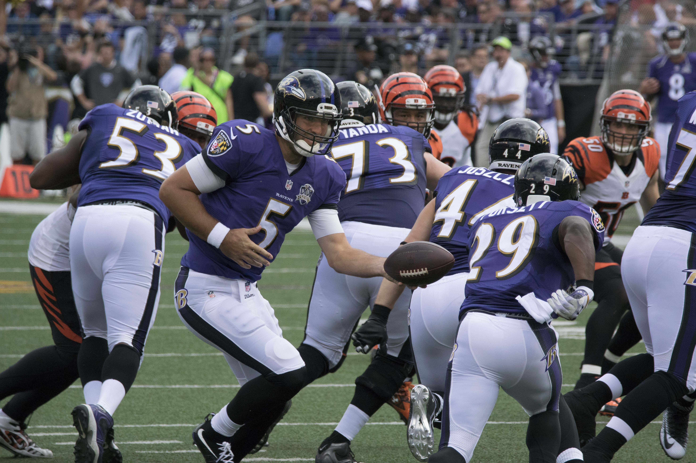

Ravens Legends: Impactful Players That Shaped Baltimore's Football History
An intro to the history of the Baltimore Ravens football organization
The Baltimore Ravens are a professional American football team based in Baltimore, Maryland. They are part of the AFC North division of the National Football league (NFL). The ravens were founded in 1996 when the Cleveland Browns moved to Baltimore. In their first season they made the playoffs, then in 2000, the Ravens won their first Superbowl championship. They won their second superbowl in 2012, with Joe Flacco being named the MVP if the game. The Baltimore Ravens have long been known for their strong defense and many great players. Some of these players include Ray Lewis, Jonathen Ogden, Ed Reed, and as previously mentioned , superbowl MVP quaterback Joe Flacco.
